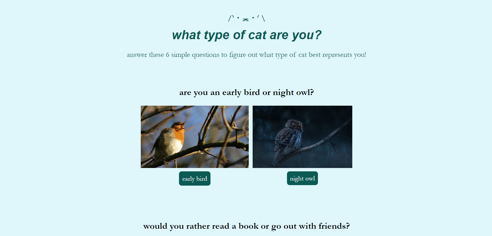

»»————— STEM —————««
Here are some STEM projects I've done in the past!

Personality Quiz
During the Girl's Who Code Summer Immersion Program, I designed and coded a personality quiz. I based mine off of my love for cats! By taking the quiz, you can see what type of cat best fits your personality. I used HTML, CSS, and JavaScript to complete this project. I initially decided to only have 4 outcomes, but because I made 6 questions, that meant that I would get 2, 3, or even 4 answers! I decided to combine the 4 original outcomes to create 7 more outcomes. This required a lot of problem solving, but because I had experience with Java before, the concepts were easy to understand. The difficult part was figuring out the JavaScript syntax and getting my code to work properly. I also used some of my probability knowledge to figure out the different outcomes and implement that into my code. If you would like to play my quiz, click here!

Truss Bridge
Each year, the physics department at my school holds a bridge building contest, one for the college prep and honors classes, and one for AP classes. We were given 15 wooden sticks and were tasked to build a bridge with strict dimension and weight rules. It would be put on a pressure machine to test the efficiency of the bridge, and to pass the project with an A, our bridge had to hold 800 times its weight. I decided to go with a truss bridge because they much easier to build than an arch bridge, and I strengthened the middle beam and outside edges with an extra piece of wood. My bridge ended up holding over 1000 times its weight! Something that definitely would have brought my efficiency up was that for one of the angled beams on the side, while I was sanding the piece, I accidentally over sanded, which means the piece was technically too short to fit between the top and middle beams. If I had restarted that piece to make a better one, I think that the efficiency would have been much heigher. During the pressure test, one piece of wood popped off, which resulted in my bridge collapsing. Guess which one?
»»————— music —————««
As mentioned in my About Me section, music has always been a part of my life, specifically classical music. Although I love classical music, I've also explored other areas of music, such as listening to different genres of music, creating my own music, and even teaching music to younger students!
Haydn - String Quartet Op. 33 No. 3 "The Bird", IV. Finale: Presto
This is a recording of my quartet performing for the opening at my school's largest concert! I performed 3 pieces in the opening, and this is just one of them. I played the 1st violin part and it was an amazing time rehearsing with my friends and being able to play for such a large audience (over 800!). Recording credit goes to my friend.
Cavetown - Green Instrumentals, snippet
I play a variety of instruments besides the violin, such as the guitar and ukulele. Over quarantine last year, my orchestra class used a program called Soundtrap, which is a digital audio workstation. I explored all the features and eventually decided to record my own projects outside of class, and this is one of them! I recreated the instrumentals for Green by Cavetown using my guitar, ukulele, a MIDI piano, and some drums that Soundtrap provides. I learned a lot about sound production through this experience and had a great time putting all the parts together.
»»————— photography —————««
I use a Canon Rebel T6 to take all my pictures, and usually a tripod. I also have a polarizer from Tiffen.

Flower Field
This photo was taken at a local park. It was sunset and I thought it was the perfect opportunity to get some shots of the flower field. Golden hour is my favorite time of day to shoot because of the colors of the sky, but right behind that is blue hour for the cool aesthetic B)

Brandywind Falls, Cuyahoga Valley NP
Over this summer, my family went to Cuyahoga Valley National Park located in Ohio. Their most popular site is Brandywine Falls, where I was able to capture this amazing photograph. For this photo, I shot in RAW and used a 1/5 second exposure time, 100 ISO, and f/18 aperture. I edited it in Rawtherapee, adjusting the lighting and colors of it, and it currently sits on my Instagram photography account! This photo was definitely difficult to edit, as my camera was pointing directly into the sun. Although I do wish I could capture the blue sky, I know I did my best with the editing to tone down the sky without sacrificing any details of the waterfall, which is the main feature.
»»————— food ——————««
I enjoy baking in my free time, and over the years, I've made quite a few yummy desserts! Here are 2 that were delicious :P

Chocolate Babka
I experimented with a lot of recipes during quarantine, and this babka was a sucessful one! The recipe is from Joshua Weissman and it can be found here. Making the dough was definitely the most difficult part for me, but it rose correctly and smelled wonderful. I enjoyed spreading the chocolate paste over the bread, and then twisting the dough to make its recognizable babka shape. My family enjoyed eating my chocolate babka, which is a win for me!

Vanilla Chiffon Cake with Strawberry Jam Filling
Decorating cakes is one of my favorite aspects of baking! This is a cake I made for my birthday a few years ago. I baked the cake part of it the day before and decorated it the morning of my birthday. I was inspired by some fall themed cakes I found online and decided to put little pumpkins all around the cake. I piped a cake border on top to complete the look! Since then, I've improved substantially in my decorating skills, making cakes for my family's birthdays as well!
go back to the top ↑